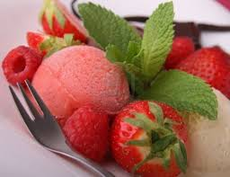

¡Helado de fresas!

Ingredientes:
- 1-Libra de Fresas
- 1-Libra de azúcar
- 1-Cucharada de esencia de fresa
- 1-Litro de agua.
Procedimiento:
lavar las fresas y para luego triturarlas, agregamos el azúcar
y la esencia más el litro de agua dejamos reposar en el
congelador hasta que toda la mezcla este perfectamente congelada.
Tiempo de preparación: 40 minutos.
Nivel de Dificultad: Medio
Porciones:4